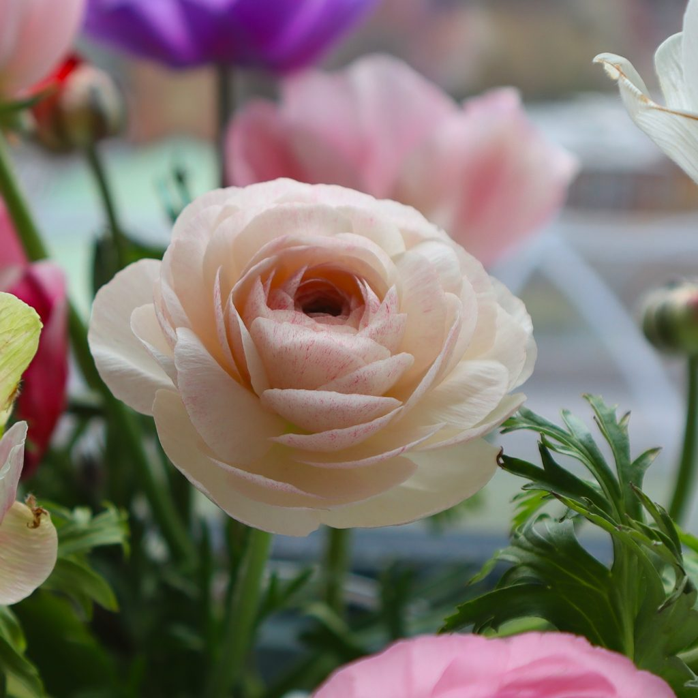
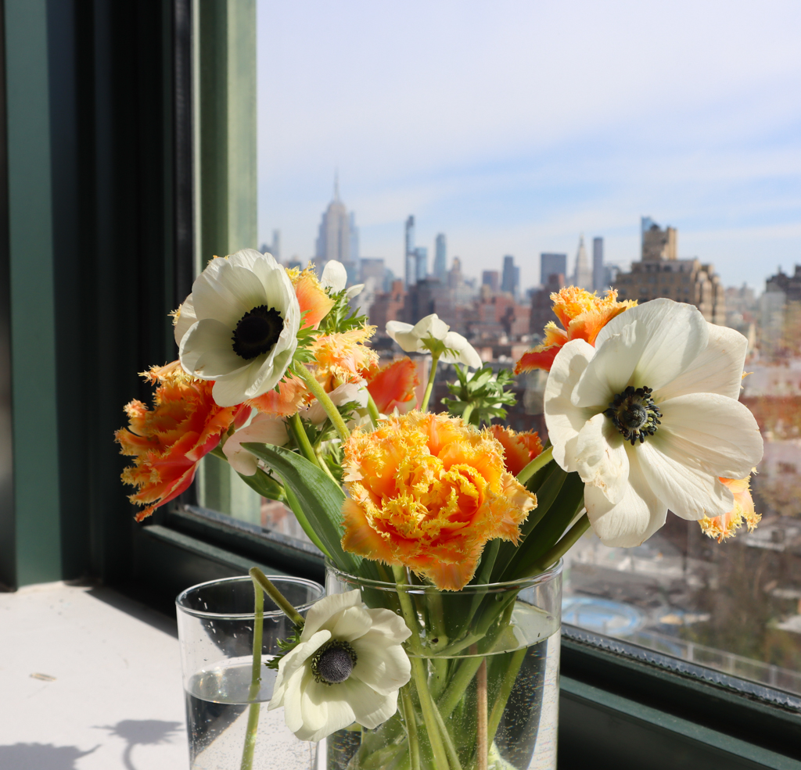
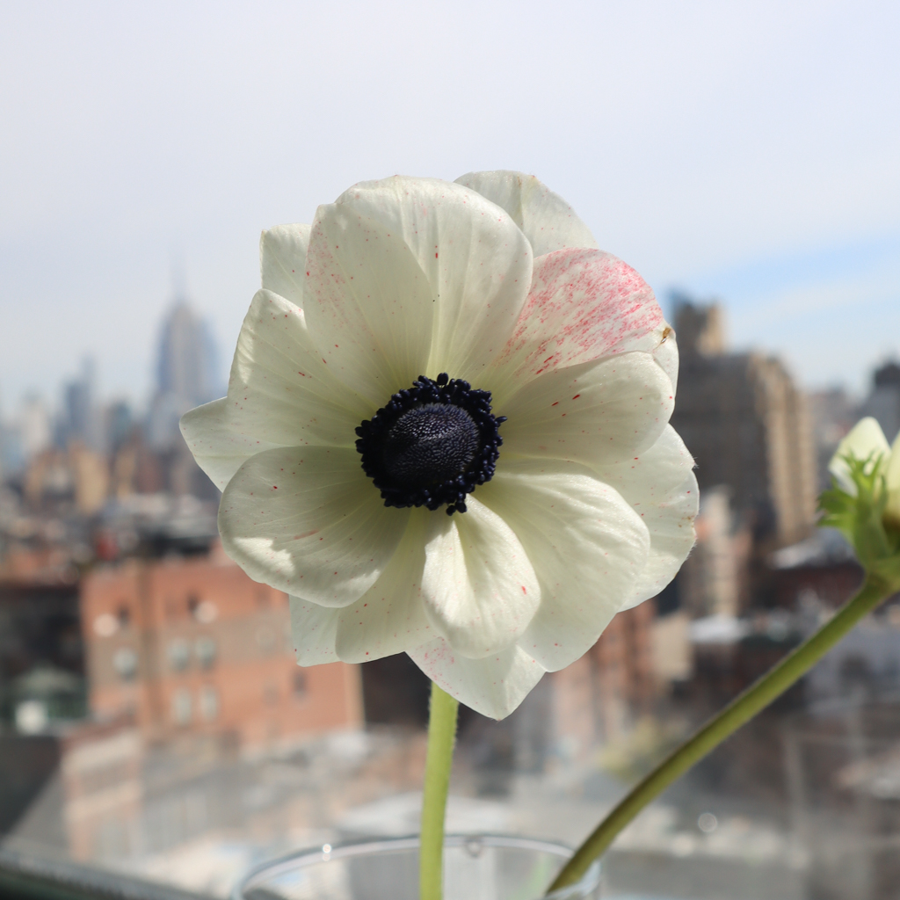

The first day of spring in the Northern Hemisphere arrives not with urgency, but with restraint. It is a quiet unfolding — a gradual return of softness, of light, of color. The season does not announce itself; it reveals itself, petal by petal.
For Nelly Creative Studios, inspiration has long been rooted in observation — of form, of material, of the subtle interplay between structure and emotion. Flowers, in their fleeting perfection, offer a language not unlike that of gemstones. Both are shaped by nature, defined by nuance, and appreciated most fully when studied closely.
This is a living collection. A non-exhaustive guide to favorite blooms, gathered over time — often sourced from early mornings at the Union Square Greenmarket in New York City, where the rhythm of the seasons is felt most intimately.
Each entry marks a moment. Each flower, a study in color and form.
Ranunculus
There is a quiet intricacy to ranunculus that invites stillness.
Layer upon layer of paper-thin petals fold inward and outward in near-perfect succession, forming a structure that feels both deliberate and impossibly soft. The geometry is subtle, but unmistakable — reminiscent of antique faceting, where precision exists without severity.
Their palette is expansive yet restrained: washed blush, muted apricot, pale citrine, and the occasional deep carmine. Even at their most saturated, they retain a softness — as though viewed through a veil of light.
Ranunculus does not demand attention. It rewards it.

Tulips

Tulips exist in a space between simplicity and quiet tension.
At a glance, their form is familiar — clean, almost minimal. Yet within that restraint lies movement: a gentle curvature, a tendency to lean toward light, a subtle shift as the bloom opens and loosens over time.
Color defines them. Early spring brings tones that feel both grounded and expectant — ivory, buttercream, saturated rose, vermilion, and flame. Some petals are traced with fine striations, others edged in contrast, offering moments of unpredictability within an otherwise disciplined form.
They are among the first to arrive, and perhaps for that reason, they carry with them a particular kind of optimism — measured, but undeniable.
Anemones

Anemones are defined by contrast.
A field of delicate petals surrounds a center of near-absolute depth — ink-dark, almost lacquered in appearance. This interplay between lightness and gravity gives the flower its presence.
There is a clarity to their structure. Nothing feels excessive. Each element serves to heighten the next: the softness of the petals, the precision of the center, the tension between the two.
In white, they feel modern — almost graphic in their restraint. In deeper hues, they take on a quiet drama.
They hold the eye without effort.
On Transience
Flowers, like gemstones, are never static. Their beauty is tied to time — to season, to light, to the brief window in which they exist at their peak.
This collection is not intended to be complete. It is intended to evolve.
With each passing week, new forms will emerge. Colors will deepen, soften, or disappear entirely. What is available today will not be tomorrow — and that transience is part of its value.
To collect is not to possess, but to observe. To notice, to remember, and, when possible, to translate.
This is the beginning.